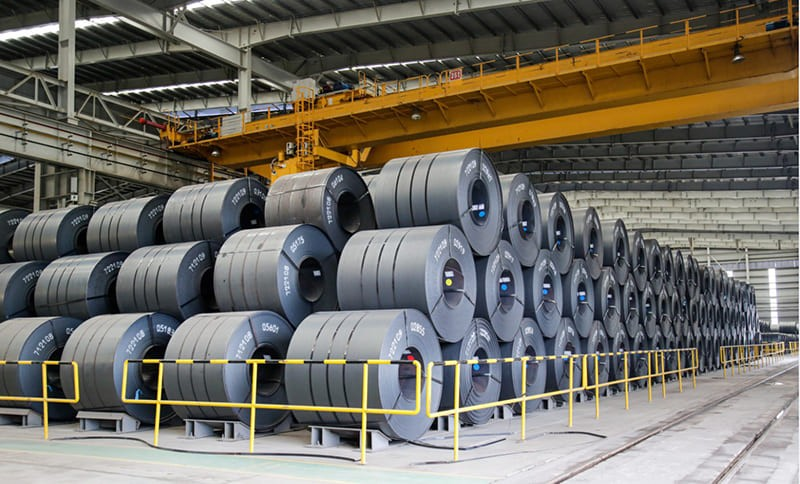
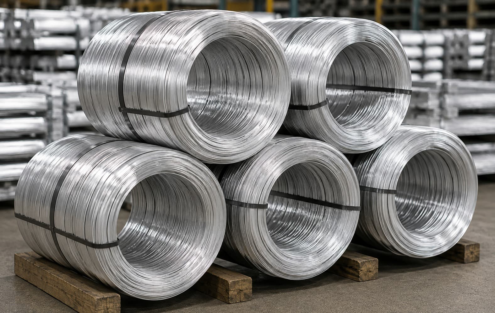
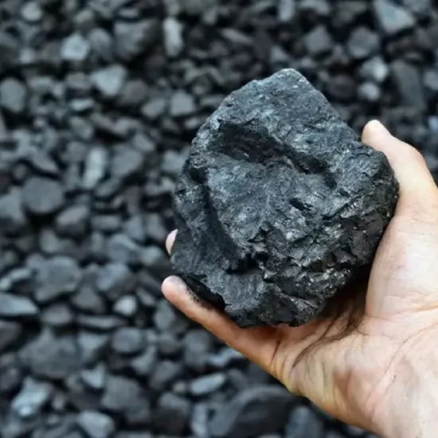
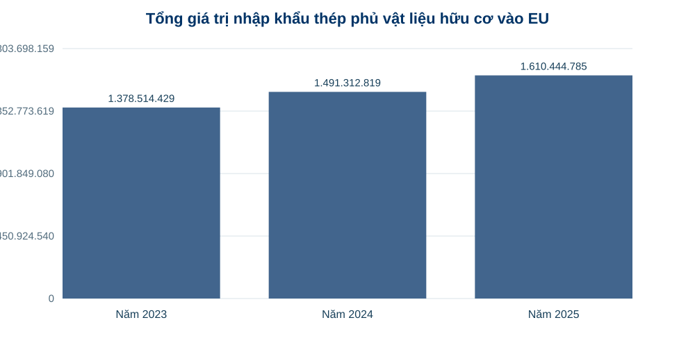
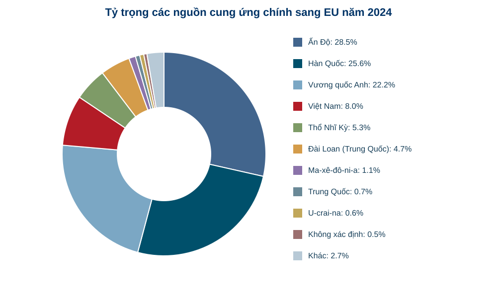
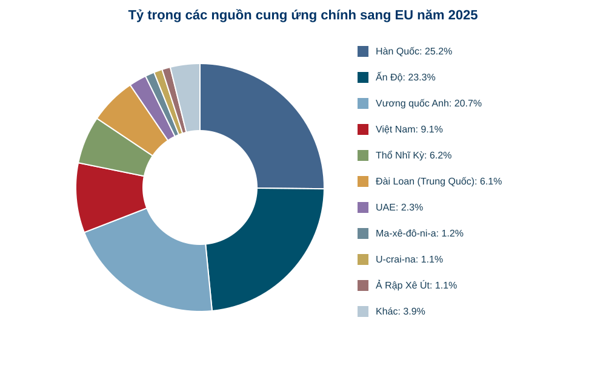
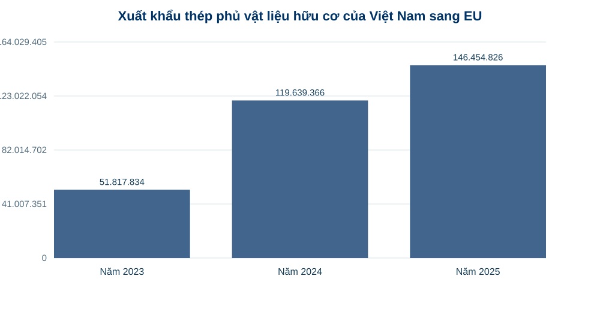
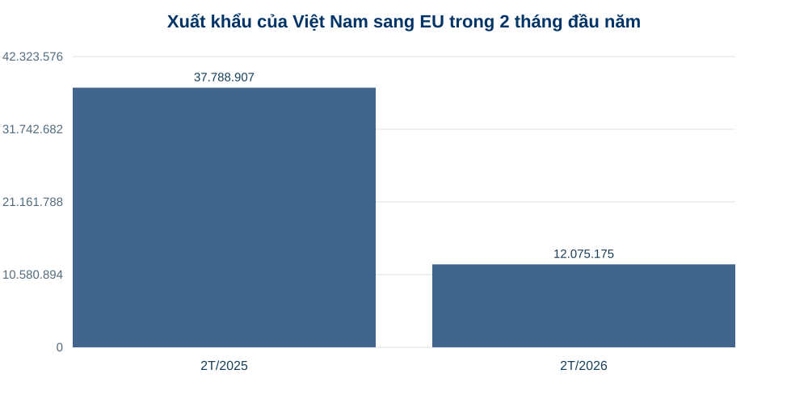

Ca-na-đa chính thức khởi xướng điều tra áp dụng biện pháp tự vệ toàn cầu đối với một số sản phẩm gỗ nhập khẩu
Ngày 04/5/2026, Cục Phòng vệ thương mại (PVTM) – Bộ Công Thương nhận được thông tin từ Phái đoàn Việt Nam tại Giơ-ne-vơ về việc Ca-na-đa đã chính thức gửi Thông báo (mã số G/SG/N/6/CAN/6) (đính kèm) tới Ủy ban Tự vệ của WTO liên quan đến việc Tòa Thương mại quốc tế Ca-na-đa (CITT) khởi xướng điều tra áp dụng biện pháp tự vệ toàn cầu đối với một số sản phẩm gỗ nhập khẩu vào Ca-na-đa. Liên quan đến vụ việc này, Cục PVTM xin cung cấp một số nội dung sau:
1. Thông tin chung
Theo thông báo nêu trên, ngày 21/4/2026, CITT đã chính thức khởi xướng điều tra tự vệ toàn cầu theo đề nghị của Chính phủ Ca-na-đa (trên cơ sở khuyến nghị của Bộ trưởng Bộ Tài chính Ca-na-đa), căn cứ Điều 20 của Đạo luật Tòa Thương mại quốc tế Ca-na-đa (Section 20 of the Canadian International Trade Tribunal Act).
Phạm vi sản phẩm bị điều tra bao gồm 03 nhóm hàng: (i) tủ gỗ và tủ phòng tắm bằng gỗ tự nhiên và gỗ công nghiệp (solid and engineered wood cabinets and vanities); (ii) sàn gỗ tự nhiên và sàn gỗ công nghiệp (solid and engineered hardwood flooring); và (iii) tủ lưu trữ bằng gỗ công nghiệp (engineered wood storage furniture).
Sản phẩm bị điều tra thường được phân loại theo các mã HS sau: 9403.40.00.10; 9403.50.00.90; 9403.60.10.10; 9403.60.10.31; 9403.60.10.39; 9403.60.10.60; 9403.60.10.91; 4409.29.10.00; 4409.29.90.41; 4409.29.90.49; 4418.74.00.00; 4418.75.00.10; 4418.75.00.90; 4418.79.00.00.
2. Thủ tục điều tra
Các mốc thời gian quan trọng trong vụ việc:
• Ngày 15/5/2026: CITT sẽ ban hành bảng câu hỏi điều tra tới các nhà sản xuất nội địa, nhà nhập khẩu và nhà sản xuất nước ngoài; đây cũng là hạn cuối để các bên liên quan nộp Thông báo tham gia (Notice of Participation) và Thông báo đại diện (Notice of Representation) lên CITT.
• Ngày 5/6/2026: Hạn cuối nộp phản hồi bảng câu hỏi điều tra.
• Ngày 1/10/2026: CITT bắt đầu tổ chức phiên điều trần (theo hình thức kết hợp trực tiếp và trực tuyến).
3. Khuyến nghị
Để ứng phó hiệu quả với vụ việc, Cục PVTM khuyến nghị các hiệp hội, doanh nghiệp sản xuất, xuất khẩu sản phẩm liên quan như sau:
• Rà soát tình hình xuất khẩu các mặt hàng thuộc phạm vi điều tra sang thị trường Ca-na-đa; nghiên cứu kỹ Thông báo khởi xướng điều tra cùng quy định, trình tự, thủ tục điều tra tự vệ của Ca-na-đa để chuẩn bị phương án ứng phó phù hợp.
• Cân nhắc đăng ký tham gia vụ việc với tư cách bên liên quan (nộp Thông báo tham gia tới CITT trước ngày 15/5/2026) nhằm bảo vệ quyền và lợi ích hợp pháp; chuẩn bị đầy đủ số liệu, tài liệu để phản hồi bảng câu hỏi điều tra đúng hạn (trước ngày 5/6/2026).
• Theo dõi chặt chẽ diễn biến vụ việc; đa dạng hóa thị trường xuất khẩu và đánh giá tác động tài chính trong các kịch bản Ca-na-đa áp dụng biện pháp tự vệ.
• Thường xuyên phối hợp, trao đổi thông tin với Cục PVTM để nhận được sự hỗ trợ kịp thời trong quá trình tham gia vụ việc.
Thông tin chi tiết liên hệ: Phòng Xử lý PVTM, Cục PVTM, Bộ Công Thương, 54 Hai Bà Trưng, Cửa Nam, Hà Nội, Email: kiennh@moit.gov.vn, ngocny@moit.gov.vn (Chuyên viên phụ trách: Nguyễn Hoàng Kiên. Di động: 094.261.3889).
Hoa Kỳ nhận hồ sơ đề nghị điều tra chống bán phá giá và chống trợ cấp đối với sản phẩm máy nén khí di động hoặc cố định nhập khẩu từ Việt Nam
Ngày 30 tháng 4 năm 2026, Bộ Thương mại Hoa Kỳ (DOC) đã nhận hồ sơ đề nghị điều tra chống bán phá giá (CBPG) và chống trợ cấp (CTC) với máy nén khí di động hoặc cố định nhập khẩu từ Ma-lai-xi-a, Trung Quốc và Việt Nam:
1. Thông tin chung về vụ việc
• Mã vụ việc: A-552-856 (CBPG) và C-552-857 (CTC).
• Sản phẩm bị đề nghị điều tra: sản phẩm máy nén khí chủ yếu thuộc mã HS 8414.80.16.15, 8414.80.16.25, 8414.80.16.35 và 84.14.80.16.85.
• Nguyên đơn: Công ty MAT Industries, LLC
• Ngày nhận đơn: Ngày 30 tháng 4 năm 2026.
• Doanh nghiệp xuất khẩu bị cáo buộc bán phá giá và được trợ cấp: Đơn kiện nêu tên 12 doanh nghiệp của Việt Nam sản xuất, xuất khẩu sản phẩm bị điều tra
• Thời kỳ điều tra CBPG/CTC đề xuất: Năm 2025.
• Thời kỳ điều tra thiệt hại đề xuất: 03 năm (2023-2025).
• Kim ngạch xuất khẩu: Theo số liệu của Ủy ban Thương mại quốc tế Hoa Kỳ (ITC), trong năm 2025, Việt Nam xuất khẩu lần lượt khoảng 81 triệu USD sản phẩm bị cáo buộc sang Hoa Kỳ, chiếm 6% thị phần nhập khẩu. Giá trị xuất khẩu sản phẩm này của Việt Nam sang Hoa Kỳ đã tăng 42% so với năm 2023.
• Các quốc gia bị đề nghị điều tra: Ma-lai-xi-a, Trung Quốc và Việt Nam.
1.1. Thông tin cáo buộc bán phá giá
• Biên độ CBPG bị cáo buộc với hàng hóa xuất khẩu từ Việt Nam: 37,08% -149,51 %
• Nước và giá trị thay thế: Tương tự như các vụ việc gần đây, do Hoa Kỳ coi Việt Nam là quốc gia có nền kinh tế phi thị trường, nên DOC sẽ sử dụng các giá trị thay thế của quốc gia thứ ba để tính toán biên độ phá giá cho Việt Nam. Trong vụ việc này, nguyên đơn đề nghị sử dụng In-đô-nê-xi-a, Tuy-ni-di hoặc En Xan-va-đo là quốc gia thay thế do cho rằng các nước này có mức độ phát triển kinh tế tương đồng với Việt Nam và có số lượng đáng kể các nhà sản xuất bị điều tra.
1.2. Thông tin cáo buộc trợ cấp
• Biên độ CTC bị cáo buộc với hàng hóa xuất khẩu từ Việt Nam: Nguyên đơn không đưa ra cáo buộc với biên độ trợ cấp.
• Các chương trình trợ cấp bị cáo buộc: Nguyên đơn cáo buộc các doanh nghiệp sản xuất/xuất khẩu máy nén khí của Việt Nam đã nhận được 46 chương trình trợ cấp từ Chính phủ, gây thiệt hại đáng kể hoặc đe dọa gây thiệt hại đáng kể cho ngành sản xuất nội địa Hoa Kỳ. Các chương trình trợ cấp bị cáo buộc thuộc các nhóm:
(1) Nhóm các chương trình cho vay và đảm bảo (9 chương trình): Cho vay chính sách từ Ngân hàng Nhà nước Việt Nam và các Ngân hàng chính sách khác, Chương trình hỗ trợ lãi suất từ Ngân hàng Nhà nước Việt Nam, Bao thanh toán xuất khẩu từ các Ngân hàng Thương mại Nhà nước (SOCBs), Bảo lãnh hoạt động xuất khẩu từ SOCBs, Cho vay ưu đãi cho các nhà xuất khẩu từ SOCBs, Tín dụng xuất khẩu từ Ngân hàng Phát triển Việt Nam (VDB), Tín dụng đầu tư từ VDB, Cho vay ưu đãi cho các Chương trình Trung tâm Đổi mới Sáng tạo Quốc gia, Các Chương trình Cho vay tạo điều kiện chuyển đổi sang năng lượng sạch.
TIN TRONG NƯỚC
Hoa Kỳ nhận hồ sơ đề nghị điều tra chống bán phá giá và chống trợ cấp đối với sản phẩm máy nén khí di động hoặc cố định nhập khẩu từ Việt Nam — tiếp
(2) Nhóm các chương trình ưu đãi thuế (20 chương trình): Ưu đãi thuế thu nhập cho doanh nghiệp trong khu vực đặc biệt, ưu đãi thuế thu nhập cho doanh nghiệp xuất khẩu, ưu đãi thuế cho các khoản đầu tư cũ, ưu đãi thuế cho các khoản đầu tư mới, ưu đãi thuế theo Nghị định 60/2012/NĐ-CP, ưu đãi thuế thu nhập theo Nghị định số 24, chương trình thuế thu nhập ưu đãi cho doanh nghiệp có vốn đầu tư nước ngoài, khấu hao nhanh và tăng chi phí được khấu trừ, chương trình ưu đãi thuế thu nhập doanh nghiệp cho các ngành cụ thể, thuế suất ưu đãi cho các dự án nghiên cứu và phát triển và đầu tư lớn, ưu đãi thuế thu nhập doanh nghiệp, gói hỗ trợ cho các ngành công nghiệp vừa và nhỏ, ưu đãi cho các ngành công nghiệp hỗ trợ, miễn thuế nhập khẩu đối với hàng nhập khẩu dùng để sản xuất hàng xuất khẩu, hoàn thuế nhập khẩu đối với nguyên liệu thô dùng để sản xuất hàng xuất khẩu, miễn thuế nhập khẩu đối với hàng nhập khẩu vào khu công nghiệp, miễn thuế nhập khẩu đối với nguyên liệu thô nhập khẩu dùng cho các doanh nghiệp chế biến xuất khẩu và khu chế biến xuất khẩu, miễn thuế nhập khẩu đối với thiết bị và máy móc, miễn thuế cho các dự án Trung tâm Đổi mới Quốc gia, miễn các loại thuế khác đối với hàng nhập khẩu nguyên liệu thô, vật tư và linh kiện.
(3) Nhóm các Chương trình Đất đai (6 chương trình): Miễn hoặc giảm tiền thuê đất cho các ngành công nghiệp khuyến khích hoặc khu vực được chọn, miễn thuế và phí sử dụng đất cho các ngành công nghiệp khuyến khích hoặc khu công nghiệp, miễn hoặc giảm tiền thuê đất cho các doanh nghiệp đầu tư nước ngoài, miễn phí thuê đất cho trung tâm đổi mới quốc gia và các dự án của trung tâm, miễn phí thuê đất cho các dự án đủ điều kiện khác, miễn và giảm tiền thuê đất cho các doanh nghiệp nằm trong khu đặc biệt.
(4) Nhóm các chương trình hỗ trợ (04 chương trình): Tài trợ khuyến khích xuất khẩu, tài trợ hỗ trợ đầu tư, chương trình tài trợ theo Nghị định số 118/2015/NĐ-CP, cung cấp dịch vụ với mức giá thấp hơn giá thị trường.
(5) Chương trình tiện ích với giá ưu đãi (04 chương trình): gồm các chương trình cung cấp ga, khí hóa lỏng tự nhiên, điện với mức giá ưu đãi cho các khu công nghiệp và khu chế biến xuất khẩu.
(6) Cho vay chính sách xuyên biên giới từ các tổ chức tài chính Trung Quốc (03 chương trình): Nguyên đơn cáo buộc các chính sách của chính phủ Trung Quốc mang lại lợi ích cho các sản phẩm Việt Nam thông qua các công ty con sở hữu chéo theo “hợp tác năng lực quốc tế” thuộc sáng kiến vành đai và con đường (BRI), các dự án hợp tác năng lực tại Việt Nam, các hỗ trợ tài chính này có thể coi là các khoản trợ cấp có thể bị đối kháng.
2. Quy trình thủ tục điều tra tiếp theo
Theo quy định điều tra của Hoa Kỳ, có 02 cơ quan tham gia trong một vụ việc điều tra CBPG và CTC: DOC điều tra về hành vi bán phá giá và trợ cấp và chịu trách nhiệm chung về kết quả điều tra trong khi ITC chịu trách nhiệm đánh giá thiệt hại của ngành sản xuất trong nước. Sản phẩm chỉ bị áp thuế CBPG/CTC nếu cả 02 cơ quan đều ban hành kết luận khẳng định. Nếu như trong vụ việc CBPG, chỉ có doanh nghiệp xuất khẩu là đối tượng bị điều tra thì trong vụ việc CTC, Chính phủ cũng là đối tượng bị điều tra.
Quy trình thủ tục vụ việc điều tra CBPG và CTC tiếp theo như sau (Các mốc thời gian có thể được gia hạn):
Bước 1: Chính phủ nước bị điều tra (Việt Nam) tham vấn với DOC về đơn đề nghị điều tra CTC.
Bước 2: DOC có 20 ngày để xem xét đơn đề nghị điều tra và ban hành quyết định khởi xướng/hay không khởi xướng điều tra, dự kiến ngày 20 tháng 5 năm 2026. Trong một số trường hợp đặc biệt, DOC có thể gia hạn thời gian này lên tổng số 40 ngày.
Bước 3: ITC có 45 ngày kể từ ngày nhận đơn đề nghị để ban hành kết luận sơ bộ về thiệt hại. Trong trường hợp kết luận sơ bộ của ITC là không có thiệt hại, vụ việc sẽ được chấm dứt toàn bộ (tuy nhiên khả năng này thường thấp).
Bước 4: DOC có 140 ngày kể từ ngày khởi xướng để ban hành kết luận sơ bộ về bán phá giá và có 65 ngày kể từ ngày khởi xướng để ban hành kết luận sơ bộ về trợ cấp.
Bước 5: DOC có 75 ngày kể từ ngày ban hành kết luận sơ bộ để ban hành kết luận cuối cùng về bán phá giá/trợ cấp.
Bước 6: ITC có 45 ngày kể từ ngày DOC ban hành kết luận cuối cùng về bán phá giá/trợ cấp để đưa ra kết luận cuối cùng về thiệt hại.
Bước 7: DOC có 07 ngày để ban hành Lệnh áp thuế CBPG/CTC (trong trường hơp kết luận có bán phá giá/trợ cấp và thiệt hại).
(Các mốc thời gian có thể được gia hạn)
TIN TRONG NƯỚC
Hoa Kỳ nhận hồ sơ đề nghị điều tra chống bán phá giá và chống trợ cấp đối với sản phẩm máy nén khí di động hoặc cố định nhập khẩu từ Việt Nam — tiếp
3. Khuyến nghị
Trên đây là một số thông tin liên quan đến vụ việc nhận hồ sơ đề nghị điều tra CBPG và CTC với sản phẩm máy nén khí nhập khẩu từ Việt Nam và một số nước.
Để chuẩn bị ứng phó với vụ việc, Cục PVTM khuyến nghị các doanh nghiệp sản xuất, xuất khẩu sản phẩm liên quan:
• Theo dõi chặt chẽ diễn biến tiếp theo của vụ việc; chủ động nghiên cứu, nắm vững quy định, trình tự, thủ tục điều tra CBPG và CTC của Hoa Kỳ và dự kiến chiến lược kháng kiện phù hợp với doanh nghiệp (trong trường hợp DOC khởi xướng điều tra); đa dạng hóa thị trường và mặt hàng xuất khẩu;
• Hợp tác đầy đủ với Cơ quan điều tra Hoa Kỳ trong suốt quá trình diễn ra vụ việc. Bất kỳ hành động thể hiện sự bất hợp tác hoặc hợp tác không đầy đủ có thể dẫn tới việc Cơ quan điều tra Hoa Kỳ sử dụng các chứng cứ sẵn có bất lợi hoặc áp dụng mức thuế CBPG và CTC cáo buộc cao nhất cho doanh nghiệp;
• Chủ động đăng ký tài khoản IA ACCESS tại cổng thông tin điện tử của DOC (https://access.trade.gov/) nhằm cập nhật thông tin và nộp các văn bản, tài liệu liên quan tới Cơ quan điều tra Hoa Kỳ;
• Thường xuyên phối hợp, cập nhật thông tin cho Cục PVTM để nhận được sự hỗ trợ kịp thời.
Thông tin chi tiết liên hệ: Phòng Xử lý PVTM nước ngoài, Cục PVTM, Bộ Công Thương, 54 Hai Bà Trưng, Phường Cửa Nam, Hà Nội (Chuyên viên phụ trách: Nguyễn Việt Hà, Email: hanv@moit.gov.vn, ngocny@moit.gov.vn. Website: http://trav.gov.vn/.
TIN TRONG NƯỚC
Cục Phòng vệ thương mại thông báo về việc tiếp nhận hồ sơ yêu cầu rà soát biện pháp chống bán phá giá đối với một số sản phẩm thép cán nóng có xuất xứ từ Cộng hòa nhân dân Trung Hoa
Ngày 04 tháng 7 năm 2025, Bộ Công Thương ban hành Quyết định số 1959/QĐ-BCT về việc áp dụng thuế chống bán phá giá chính thức đối với một số sản phẩm thép cán nóng có xuất xứ từ Cộng hòa nhân dân Trung Hoa và chấm dứt điều tra áp dụng biện pháp chống bán phá giá đối với một số sản phẩm thép cán nóng có xuất xứ từ Cộng hòa Ấn Độ (mã vụ việc AD20).
Căn cứ quy định tại Điều 51 Nghị định số 86/2025/NĐ-CP, Cục Phòng vệ thương mại (Cơ quan điều tra) thông báo tiếp nhận hồ sơ rà soát theo yêu cầu của bên liên quan về việc áp dụng thuế chống bán phá giá đối với sản phẩm thép cán nóng có xuất xứ từ Cộng hòa nhân dân Trung Hoa.
Theo đó, các bên liên quan theo quy định tại Điều 56 Nghị định số 86/2025/NĐ-CP có quyền nộp hồ sơ yêu cầu rà soát. Hồ sơ yêu cầu rà soát phải bao gồm đầy đủ các thông tin tài liệu theo quy định tại khoản 1 Điều 57 Nghị định số 86/2025/NĐ-CP.
Thời hạn Cơ quan điều tra tiếp nhận hồ sơ chậm nhất là ngày 6 tháng 6 năm 2026.
Hồ sơ yêu cầu rà soát đề nghị gửi về Cơ quan điều tra theo địa chỉ dưới đây:
Cục Phòng vệ thương mại – Bộ Công Thương
54 Hai Bà Trưng – phường Cửa Nam – Hà Nội.
Cơ quan điều tra trân trọng thông báo./.

Thép cán nóng — ảnh minh họa; Nguồn ảnh: Hòa Phát
TIN NƯỚC NGOÀI
Pa-ki-xtan tăng cường sử dụng công cụ phòng vệ thương mại để bảo vệ sản xuất trong nước
Chủ tịch Ủy ban Thuế quan Quốc gia Pa-ki-xtan (NTC), ông Jawwad Uwais Agha cho biết cơ quan này sẽ tiếp tục tăng cường các biện pháp phòng vệ (chống bán phá giá, chống trợ cấp và biện pháp tự vệ) để bảo vệ ngành sản xuất trong nước trước tình trạng cạnh tranh không công bằng từ hàng hóa nhập khẩu.
Phát biểu tại cuộc họp với Phòng Thương mại và Công nghiệp Lahore (LCCI), ông Jawwad Uwais Agha nhấn mạnh các vụ việc do doanh nghiệp kiến nghị sẽ được xem xét trực tiếp và xử lý nhanh chóng trên cơ sở quy định hiện hành nhằm bảo vệ ngành sản xuất trong nước. Theo ông Jawwad Uwais Agha, NTC đang mở rộng cơ chế hỗ trợ doanh nghiệp theo hướng tăng cường trao đổi trực tiếp và rút ngắn quy trình xử lý, thay vì phụ thuộc chủ yếu vào các thủ tục hành chính.
Tại cuộc họp, Chủ tịch LCCI, ông Faheemur Rehman Saigol đánh giá NTC đang đóng vai trò quan trọng trong việc hỗ trợ và bảo vệ ngành sản xuất trong nước, đồng thời ghi nhận những nỗ lực của cơ quan này trong việc xử lý các vấn đề liên quan đến cạnh tranh thương mại.
Ông Faheemur Rehman Saigol cũng đề xuất xây dựng chính sách thuế quan theo từng ngành, duy trì cơ cấu thuế cân bằng và áp dụng mức thuế 0% đối với các nguyên liệu đầu vào chưa thể sản xuất trong nước nhằm giảm chi phí sản xuất và nâng cao năng lực cạnh tranh cho doanh nghiệp. Bên cạnh đó, ông Faheemur Rehman Saigol cũng bày tỏ quan ngại đối với các hiệp định thương mại tự do (FTA) và hiệp định thương mại ưu đãi (PTA), cho rằng một số thỏa thuận trước đây đã gây ảnh hưởng cho ngành sản xuất trong nước. Vì vậy, ông Faheemur Rehman Saigol nhấn mạnh cần tăng cường tham vấn các bên liên quan trong quá trình đàm phán các hiệp định thương mại.
Theo chủ tịch LCCI, Pa-ki-xtan cần xây dựng hệ thống thuế quan toàn diện và cân bằng nhằm thúc đẩy cho ngành sản xuất trong nước, giảm phụ thuộc vào hàng nhập khẩu và gia tăng giá trị trong nền kinh tế, các nguyên liệu sản xuất trong nước cần được bảo hộ phù hợp, đồng thời những bất cập và chống chéo trong hệ thống mã số thuế hải quan Pa-ki-xtan (PCT) cần được rà soát, xử lý nhằm hạn chế tình trạng lợi dụng sự khác biệt trong phân loại giữa nguyên liệu đầu vào và hàng hóa thành phẩm.
Về phía cơ quan quản lý, ông Jawwad Uwais Agha cho biết mục tiêu của NTC là thúc đẩy môi trường cạnh tranh công bằng, bảo đảm ngành sản xuất trong nước không phải chịu thiệt hại không công bằng và tạo ra lợi thế không hợp lý cho bất kỳ bên nào.
Ông Jawwad Uwais Agha cũng nhấn mạnh trong trường hợp hàng hóa nhập khẩu bị xác định có hành vi bán phá giá hoặc được trợ cấp gây thiệt hại cho ngành sản xuất trong nước, NTC sẽ triển khai các biện pháp phòng vệ thương mại theo quy định nhằm bảo vệ doanh nghiệp trong nước.
Theo ông Jawwad Uwais Agha, NTC đang đẩu mạnh quá trình số hóa nhằm rút ngắn thời gian xử lý hồ sơ và nâng cao hiệu quả giải quyết các vụ việc cho cộng đồng doanh nghiệp. Các quyết định được ban hành theo quy định của Tổ chức Thương mại thế giới (WTO), NTC đang nỗ lực xử lý vụ việc trong thời gian ngắn nhất để hỗ trợ doanh nghiệp kịp thời.
Bên cạnh đó, NTC cũng cho biết sẽ tăng cường nghiên cứu xu hướng thuế quan trong tương lai, đồng thời tổ chức các chương trình đào tạo và hội thảo nhằm nâng cao nhận thức cho doanh nghiệp về các công cụ phòng vệ thương mại.
Chủ tịch NTC nhấn mạnh cần đặc biệt quan tâm đến khu vực doanh nghiệp nhỏ và vừa cũng như ngành công nghiệp quy mô hộ gia đình, do đây là các lĩnh vực có tiềm năng đóng góp vào tăng trưởng xuất khẩu và gia tăng giá trị sản xuất.
Tổng hợp từ tribune.com.pk
TIN NƯỚC NGOÀI
Ấn Độ khởi xướng rà soát cuối kỳ đối với biện pháp chống trợ cấp áp dụng đối với sản phẩm dây nhôm nhập khẩu từ Ma-lai-xi-a
Ấn Độ đã khởi xướng rà soát cuối kỳ đối với biện pháp chống trợ cấp đang áp dụng đối với một số sản phẩm dây nhôm nhập khẩu từ Ma-lai-xi-a. Biện pháp chống trợ cấp được áp dụng từ ngày 24/9/2021, với thời hạn 5 năm, sau khi cơ quan điều tra xác định các sản phẩm dây nhôm dạng cuộn hoặc thanh nhôm dạng cuộn nhập khẩu từ Ma-lai-xi-a được hưởng trợ cấp, gây thiệt hại cho ngành sản xuất trong nước. Biện pháp này dự kiến hết hiệu lực vào ngày 23/9/2026.
Đơn đề nghị rà soát do các doanh nghiệp Hindalco Industries, Vedanta Ltd và Bharat Aluminium nộp lên Tổng cục Phòng vệ Thương mại Ấn Độ (DGTR). Các doanh nghiệp cho rằng việc chấm dứt biện pháp chống trợ cấp có thể dẫn đến tiếp diễn hoặc tái diễn trợ cấp, qua đó gây thiệt hại đáng kể cho ngành sản xuất trong nước.
Theo thông báo của DGTR, nguyên đơn đã cung cấp bằng chứng sơ bộ cho thấy các nhà xuất khẩu Ma-lai-xi-a tiếp tục được hưởng các khoản trợ cấp
Trên cơ sở xem xét đơn kiện và các bằng chứng ban đầu, cơ quan điều tra xác định có đủ căn cứ để khởi xướng rà soát cuối kỳ nhằm:
• Đánh giá khả năng tiếp tục hoặc tái diễn trợ cấp nếu biện pháp bị chấm dứt;
• Xem xét mức độ thiệt hại đối với ngành sản xuất trong nước;
• Xác định sự cần thiết của việc duy trì biện pháp thuế chống trợ cấp.
Trong trường hợp kết quả rà soát cho thấy việc chấm dứt biện pháp có thể dẫn đến tiếp diễn hoặc tái diễn trợ cấp và gây thiệt hại cho ngành sản xuất trong nước, DGTR sẽ kiến nghị gia hạn biện pháp thuế chống trợ cấp đối với hàng hóa nhập khẩu từ Ma-lai-xi-a.

Dây nhôm cuộn — ảnh minh họa; Nguồn ảnh: Buildex
Tổng hợp từ moneycontrol.com
TIN NƯỚC NGOÀI
Ấn Độ kiến nghị giảm thuế chống bán phá giá đối với than cốc luyện kim nhập khẩu
Tổng vụ Phòng vệ Thương mại Ấn Độ (DGTR) đề xuất tiếp tục áp dụng biện pháp chống bán phá giá đối với sản phẩm than cốc luyện kim nhập khẩu có hàm lượng tro dưới 18%, thuộc các mã HS 2704.00.10, 2704.00.20, 2704.00.30 và 2704.00.90.
Tuy nhiên, sản phẩm than cốc luyện kim có hàm lượng phốt pho siêu thấp sử dụng trong sản xuất hợp kim sắt, với hàm lượng phốt pho tối đa 0,030% và kích thước 30 mm (sai số ±5%), được loại trừ khỏi phạm vi áp dụng biện pháp chống bán phá giá.
Theo đó, DGTR đề xuất giảm mức thuế chống bán phá giá đối với than cốc luyện kim nhập khẩu từ một số quốc gia xuất khẩu mức thuế đối với In-đô-nê-xi-a giảm từ 82,75 USD/tấn xuống còn 67,50 USD/tấn, trong khi mức thuế áp dụng đối với Nhật Bản giảm từ 60,87 USD/tấn xuống còn 42,95 USD/tấn. Bên cạnh đó, mức thuế áp dụng đối với Trung Quốc, Cô-lôm-bi-a, Nga và Úc cũng được đề xuất giảm ở mức thấp hơn.
Theo kết quả điều tra của DGTR trong giai đoạn từ tháng 10/2023 đến tháng 9/2024, sản phẩm than cốc luyện kim nhập khẩu thuộc phạm vi điều tra xác định có hành vi bán phá giá và gây thiệt hại đáng kể cho ngành sản xuất trong nước. Trên cơ sở đó, Cơ quan điều tra cho rằng việc tiếp tục duy trì biện pháp chống bán phá giá là cần thiết nhằm ngăn ngừa thiệt hại tiếp diễn đối với ngành sản xuất trong nước. Ngày 31/12/2025 Ấn Độ tiếp tục áp dụng biện pháp chống bán phá giá tạm thời đối với sản phẩm than cốc luyện kim.

Than cốc luyện kim — ảnh minh họa; Nguồn ảnh: Made-in-China
Tổng hợp từ steelradar.com
TIN NƯỚC NGOÀI
EU gia tăng điều tra chống bán phá giá đối với hóa chất nhập khẩu từ Trung Quốc
Các đơn khiếu nại chống bán phá giá của ngành hóa chất châu Âu đã tăng lên mức cao nhất từ trước đến nay, khi Liên minh châu Âu (EU) liên tiếp khởi xướng các vụ điều tra đối với hàng hóa nhập khẩu giá rẻ từ Trung Quốc trong hai năm qua.
Hiện nay các vụ việc liên quan đến ngành hoá chất chiếm khoảng một nửa tổng số vụ việc phòng vệ thương mại mới của EU. Riêng trong tháng 11/2025, tập đoàn hóa chất Ineos của Vương Quốc Anh đã nộp 10 đơn khiếu nại. Các sản phẩm bị điều tra chủ yếu là các loại hóa chất đầu vào ít được biết đến nhưng có vai trò quan trọng đối với hoạt động sản xuất công nghiệp. Đối với một số sản phẩm như lysine, loại axit amin được sử dụng trong thức ăn chăn nuôi và dược phẩm, hiện EU chỉ còn duy nhất một nhà sản xuất.
Hiệp hội Công nghiệp hóa chất châu Âu (Cefic) cho biết, áp lực cạnh tranh từ hàng hóa Trung Quốc đang khiến ngành hóa chất châu Âu rơi vào tình trạng đặc biệt khó khăn, trong bối cảnh ngành này vốn đã chịu tác động từ chi phí năng lượng cao và các quy định quản lý nghiêm ngặt. Hiện có ít nhất 26 đơn khiếu nại đang chờ được điều tra.
Trong giai đoạn 2018–2020, EU chỉ khởi xướng khoảng một vụ điều tra mỗi năm đối với hóa chất. Tuy nhiên, số lượng này đã tăng dần và đạt 12 vụ mỗi năm trong các năm 2024 và 2025.
EU nhận định rằng nguyên nhân chính dẫn tới làn sóng điều tra mới là sự suy giảm của thị trường bất động sản Trung Quốc, khiến nhu cầu nội địa đối với nhà ở và đồ gia dụng giảm mạnh. Điều này buộc các doanh nghiệp Trung Quốc phải đẩy mạnh xuất khẩu để tiêu thụ lượng công suất dư thừa.
Trong hai năm qua, EU đã khởi xướng 24 vụ điều tra chống bán phá giá đối với sản phẩm hóa chất nhập khẩu. Các sản phẩm bị điều tra bao gồm 1,4-Butanediol (BDO) là một hợp chất hữu cơ sử dụng để sản xuất nhiều loại nhựa và axit adipic là nguyên liệu dùng để sản xuất nylon và một số loại dược phẩm.
Bên cạnh Trung Quốc, Hoa Kỳ và Ả-rập Xê-út cũng đang trở thành nguồn cung hóa chất giá rẻ ngày càng lớn trong bối cảnh các biện pháp thuế quan của Hoa Kỳ thúc đẩy sự chuyển hướng thương mại toàn cầu.
Ngành hóa chất châu Âu đã phải đóng cửa khoảng 7% công suất, đồng thời tốc độ đóng cửa nhà máy đang tăng gấp đôi qua từng năm. Đối với một số loại hóa chất, hiện châu Âu chỉ còn duy nhất một doanh nghiệp sản xuất, trong khi EU đã không còn khả năng sản xuất một số sản phẩm như paracetamol.
TIN NƯỚC NGOÀI
EU gia tăng điều tra chống bán phá giá đối với hóa chất nhập khẩu từ Trung Quốc — tiếp
Trong khi đó, Trung Quốc bác bỏ các cáo buộc về tình trạng dư thừa công suất, cho rằng nhận định này không phản ánh đúng thực tế khách quan. Bộ Ngoại giao Trung Quốc đồng thời cho rằng các biện pháp mang tính bảo hộ không giúp cải thiện năng lực cạnh tranh của doanh nghiệp, đồng thời kêu gọi EU tuân thủ các quy định của Tổ chức Thương mại thế giới (WTO) và không lạm dụng các công cụ phòng vệ thương mại.
Mặc dù EU vẫn duy trì thị trường mở nhằm bảo vệ một số ngành công nghiệp nền tảng nhằm tránh phụ thuộc quá mức vào nguồn cung từ bên ngoài. Theo quan điểm của EU, ngành hóa chất có vai trò tương tự như ngành kim loại, là cơ sở hạ tầng quan trọng của nền kinh tế và cần duy trì năng lực sản xuất nhất định trong nội khối.
EU đang siết chặt cơ chế phòng vệ thương mại. Ủy ban châu Âu (EC) hiện đã triển khai cơ chế giám sát nhập khẩu trong thời gian điều tra nhằm cho phép áp dụng hồi tố thuế chống bán phá giá và chống trợ cấp nếu cần thiết. Theo phía EU, biện pháp này đã bắt đầu tạo tác động làm giảm lượng nhập khẩu do doanh nghiệp dự báo trước nguy cơ bị áp thuế bổ sung.
Ngoài ra, EC cũng đang xem xét khả năng xây dựng quy định mới theo hướng áp dụng đối với nhóm sản phẩm rộng hơn nhằm rút ngắn quá trình thu thập chứng cứ.
Hiệp hội Cefic cho rằng EU cần có thêm các biện pháp mạnh mẽ và khẩn cấp hơn. Hiệp hội này đã gửi thư đề nghị EC tuyển thêm 20 cán bộ xử lý vụ việc nhằm giải quyết tình trạng tồn đọng hồ sơ, đồng thời thúc giục EU sử dụng quyết liệt hơn các công cụ phòng vệ thương mại hiện có.
Trong khi đó, ông James Webber, phụ trách lĩnh vực hóa chất và công nghiệp tại hãng luật A&O Shearman cho rằng các biện pháp chống bán phá giá có thể tạo ra cả tác động tích cực lẫn tiêu cực do làm gia tăng chi phí sản xuất. Theo ông, lợi ích và tác động của các biện pháp này không phân bổ đồng đều giữa các quốc gia thành viên EU; chẳng hạn Bồ Đào Nha có thể phải chịu chi phí cao hơn đối với chai nhựa và polyester, qua đó góp phần làm gia tăng lạm phát, trong khi các nhà sản xuất tại khu vực Tây Bắc Âu được hưởng lợi.
Tổng hợp từ Financial Times
TIN NƯỚC NGOÀI
EU áp thuế chống bán phá giá đối với axit adipic nhập khẩu từ Trung Quốc
Ủy ban châu Âu (EC) đã quyết định áp dụng thuế chống bán phá giá chính thức đối với mặt hàng axit adipic nhập khẩu từ Trung Quốc với mức thuế dao động từ 29,1% đến 42,3%, sau khi kết luận rằng các nhà xuất khẩu Trung Quốc đã bán sản phẩm này vào thị trường Liên minh châu Âu (EU) với giá thấp hơn giá trị thông thường.
Biện pháp được đưa ra sau cuộc điều tra của Tổng cục Thương mại và An ninh Kinh tế thuộc EC, cơ quan xác định rằng lượng hàng nhập khẩu bị bán phá giá đã gây thiệt hại cho ngành sản xuất axit adipic của EU. Trước đó, EU đã áp dụng thuế chống bán phá giá tạm thời đối với sản phẩm này từ tháng 11 năm ngoái.
Theo Ủy ban châu Âu, ngành sản xuất axit adipic của EU, chủ yếu tập trung tại Đức, Pháp và I-ta-li-a, hiện tạo việc làm cho hơn 1.100 lao động và đã chịu tác động bất lợi từ lượng hàng nhập khẩu giá thấp từ Trung Quốc.
Axit adipic là một hóa chất công nghiệp quan trọng, được sử dụng trong sản xuất Nylon 66 và polyester polyol, phục vụ nhiều lĩnh vực như dệt may, nội thất, ô tô, giày dép và xây dựng. Hằng năm, EU nhập khẩu khoảng 160 triệu euro axit adipic từ các nước ngoài khối, trong đó gần 130 triệu euro có nguồn gốc từ Trung Quốc.
Tổng hợp từ Alchempro.com
THÔNG TIN XUẤT NHẬP KHẨU
Tình hình xuất khẩu mặt hàng thép phủ vật liệu hữu cơ từ các thị trường trên thế giới sang EU
1. Mô tả mặt hàng thép phủ vật liệu hữu cơ
Thép phủ vật liệu hữu cơ (Organic coated steel products) là sản phẩm thép dẹt đã được xử lý bề mặt và phủ lên một hoặc nhiều lớp vật liệu hữu cơ nhằm tăng khả năng chống ăn mòn, nâng cao độ bền, cải thiện tính thẩm mỹ cũng như đáp ứng các yêu cầu kỹ thuật trong quá trình sử dụng. Sản phẩm này thường được sản xuất trên nền thép cán nguội, thép mạ kẽm, thép mạ hợp kim nhôm kẽm hoặc các loại thép đã được phủ kim loại khác. Sau khi trải qua công đoạn làm sạch, xử lý hóa học và tạo lớp nền, bề mặt thép sẽ được phủ sơn hoặc các hợp chất hữu cơ bằng công nghệ sơn cuộn liên tục. Lớp phủ hữu cơ có thể bao gồm polyester (PE), silicon modified polyester (SMP), polyvinylidene fluoride (PVDF), polyurethane (PU), epoxy hoặc plastisol, tùy thuộc vào mục đích sử dụng và yêu cầu về độ bền của sản phẩm. Trong cấu tạo thông thường, thép phủ vật liệu hữu cơ gồm lớp thép nền, lớp phủ kim loại chống ăn mòn, lớp xử lý hóa học, lớp sơn lót và lớp sơn hoàn thiện ở mặt trên; mặt dưới có thể được phủ lớp sơn bảo vệ hoặc lớp sơn chức năng tùy theo tiêu chuẩn kỹ thuật của từng nhà sản xuất.
Sản phẩm thép phủ vật liệu hữu cơ có nhiều ưu điểm nổi bật như khả năng chống oxy hóa, chống ăn mòn trong môi trường ẩm hoặc hóa chất, độ bền màu cao, khả năng chịu nhiệt và chịu thời tiết tốt, đồng thời có tính thẩm mỹ cao nhờ đa dạng về màu sắc, hoa văn và bề mặt. Nhờ các đặc tính này, mặt hàng được sử dụng rộng rãi trong nhiều lĩnh vực như xây dựng dân dụng và công nghiệp, sản xuất tấm lợp, vách ngăn, cửa cuốn, hệ thống thông gió, thiết bị điện gia dụng, nội thất, ô tô và các sản phẩm cơ khí chế tạo khác. Trong ngành xây dựng, thép phủ vật liệu hữu cơ thường được dùng để sản xuất mái lợp và tấm panel do có trọng lượng nhẹ, tuổi thọ cao và giảm chi phí bảo trì. Trong lĩnh vực điện gia dụng, sản phẩm được sử dụng để chế tạo vỏ tủ lạnh, máy giặt, điều hòa không khí hoặc lò vi sóng nhờ khả năng tạo hình tốt và tính thẩm mỹ cao.
Trên thị trường quốc tế, thép phủ vật liệu hữu cơ được xem là dòng sản phẩm thép giá trị gia tăng cao, có hàm lượng công nghệ và yêu cầu kỹ thuật lớn hơn so với thép cán nguội hoặc thép mạ thông thường. Các quốc gia có ngành sản xuất phát triển như Trung Quốc, Hàn Quốc, Nhật Bản, Hoa Kỳ, Ấn Độ và các nước EU hiện là những nhà sản xuất và xuất khẩu lớn đối với mặt hàng này. Nhu cầu tiêu thụ thép phủ vật liệu hữu cơ trên thế giới tiếp tục tăng trong bối cảnh xu hướng xây dựng xanh, tiết kiệm năng lượng và sử dụng vật liệu có độ bền cao ngày càng phổ biến. Đồng thời, sự phát triển mạnh của ngành điện gia dụng và hạ tầng công nghiệp cũng thúc đẩy nhu cầu sử dụng sản phẩm này. Tuy nhiên, do đặc điểm có giá trị gia tăng cao và cạnh tranh mạnh về giá, thép phủ vật liệu hữu cơ thường là đối tượng của các cuộc điều tra phòng vệ thương mại như chống bán phá giá, chống trợ cấp hoặc chống lẩn tránh biện pháp phòng vệ thương mại tại nhiều thị trường lớn. Vì vậy, các doanh nghiệp sản xuất và xuất khẩu cần chú trọng kiểm soát chất lượng, minh bạch nguồn gốc nguyên liệu, nâng cao tỷ lệ nội địa hóa và tuân thủ đầy đủ các tiêu chuẩn kỹ thuật cũng như quy định thương mại của nước nhập khẩu nhằm giảm thiểu rủi ro trong hoạt động xuất khẩu.
Quy trình sản xuất thép phủ vật liệu hữu cơ
Quy trình sản xuất thép phủ vật liệu hữu cơ là quá trình kết hợp giữa công nghệ luyện – cán thép, công nghệ xử lý bề mặt kim loại và công nghệ sơn phủ hiện đại nhằm tạo ra sản phẩm thép có khả năng chống ăn mòn cao, độ bền cơ học tốt và tính thẩm mỹ cao. Nguyên liệu đầu vào chủ yếu là thép cán nguội hoặc thép đã được mạ kim loại như thép mạ kẽm nhúng nóng, thép mạ hợp kim nhôm kẽm hoặc các loại thép phủ kim loại khác dưới dạng cuộn. Quy trình sản xuất thường được thực hiện trên dây chuyền sơn cuộn liên tục (Continuous Coil Coating Line – CCL), cho phép xử lý và phủ bề mặt thép với tốc độ cao, độ chính xác lớn và chất lượng đồng đều.
Giai đoạn đầu tiên của quy trình là xử lý bề mặt thép nền. Cuộn thép sau khi đưa vào dây chuyền sẽ được tháo cuộn và làm sạch nhằm loại bỏ dầu mỡ, bụi bẩn, tạp chất hoặc các oxit kim loại còn tồn tại trên bề mặt. Công đoạn này thường sử dụng hóa chất tẩy rửa kết hợp với hệ thống chổi cơ học và nước áp lực cao để đảm bảo bề mặt thép đạt độ sạch cần thiết trước khi phủ sơn. Sau đó, thép được xử lý hóa học bằng các dung dịch cromat hoặc các hợp chất thân thiện môi trường nhằm tạo lớp chuyển đổi hóa học trên bề mặt kim loại. Lớp xử lý này có vai trò tăng độ bám dính giữa thép và lớp sơn phủ, đồng thời nâng cao khả năng chống ăn mòn của sản phẩm trong quá trình sử dụng.
THÔNG TIN XUẤT NHẬP KHẨU
Tình hình xuất khẩu mặt hàng thép phủ vật liệu hữu cơ từ các thị trường trên thế giới sang EU — tiếp
Sau công đoạn xử lý bề mặt, thép sẽ được đưa qua hệ thống phủ sơn lót. Lớp sơn lót được phủ bằng công nghệ sơn trục lăn (roller coating) với độ dày được kiểm soát nghiêm ngặt nhằm tạo lớp nền liên kết giữa bề mặt thép và lớp sơn hoàn thiện. Sau khi phủ sơn lót, thép được đưa vào lò sấy ở nhiệt độ cao để làm khô và đóng rắn lớp sơn. Tiếp theo là công đoạn phủ lớp sơn hoàn thiện ở mặt trên và lớp sơn bảo vệ ở mặt dưới. Tùy theo yêu cầu kỹ thuật và mục đích sử dụng, doanh nghiệp có thể sử dụng nhiều loại vật liệu hữu cơ khác nhau như polyester (PE), silicon modified polyester (SMP), polyurethane (PU), polyvinylidene fluoride (PVDF) hoặc plastisol. Mỗi loại sơn sẽ tạo ra các đặc tính riêng về độ bền màu, khả năng chịu tia UV, chống hóa chất, chống trầy xước hoặc khả năng chịu nhiệt. Đối với các sản phẩm cao cấp sử dụng trong môi trường khắc nghiệt như ven biển hoặc khu công nghiệp hóa chất, lớp phủ PVDF hoặc PU thường được ưu tiên do có độ bền và khả năng chống ăn mòn vượt trội.
Sau khi hoàn thành công đoạn phủ sơn, thép tiếp tục được đưa qua lò nung để làm khô và đóng rắn hoàn toàn lớp phủ hữu cơ. Quá trình nung ở nhiệt độ thích hợp giúp lớp sơn bám chắc lên bề mặt thép, tạo độ cứng và độ bền cần thiết cho sản phẩm. Tiếp đó, thép được làm nguội, kiểm tra chất lượng và cuộn lại thành phẩm. Công đoạn kiểm tra chất lượng thường bao gồm đo độ dày lớp phủ, kiểm tra độ bám dính, độ bóng, độ cứng, khả năng chịu va đập, khả năng chống ăn mòn, độ bền màu và các chỉ tiêu cơ lý khác theo tiêu chuẩn quốc tế hoặc yêu cầu của khách hàng. Những cuộn thép đạt tiêu chuẩn sẽ được đóng gói, bảo quản chống ẩm và xuất xưởng.
Hiện nay, xu hướng sản xuất thép phủ vật liệu hữu cơ trên thế giới đang chuyển mạnh sang công nghệ xanh và tiết kiệm năng lượng. Nhiều doanh nghiệp đã áp dụng các loại sơn không chứa crom, giảm phát thải hợp chất hữu cơ bay hơi (VOC), sử dụng lò nung tiết kiệm năng lượng và tự động hóa toàn bộ dây chuyền nhằm đáp ứng các tiêu chuẩn môi trường ngày càng nghiêm ngặt của thị trường quốc tế. Ngoài ra, việc ứng dụng công nghệ số trong kiểm soát chất lượng và quản lý sản xuất cũng giúp nâng cao năng suất, giảm tỷ lệ lỗi và cải thiện khả năng truy xuất nguồn gốc sản phẩm. Quy trình sản xuất hiện đại không chỉ giúp nâng cao chất lượng thép phủ vật liệu hữu cơ mà còn tạo ra sản phẩm có giá trị gia tăng cao, đáp ứng nhu cầu đa dạng của các ngành xây dựng, điện gia dụng, cơ khí chế tạo và công nghiệp ô tô trên toàn cầu.
Thị trường thép phủ vật liệu hữu cơ của EU và xu hướng
Thị trường thép phủ vật liệu hữu cơ của Liên minh châu Âu (EU) được đánh giá là một trong những thị trường phát triển và có yêu cầu kỹ thuật cao nhất trên thế giới, với nhu cầu lớn đến từ các ngành xây dựng, công nghiệp chế tạo, điện gia dụng, ô tô và năng lượng tái tạo. Thép phủ vật liệu hữu cơ, bao gồm các dòng thép mạ và thép sơn phủ màu, được sử dụng rộng rãi tại EU nhờ khả năng chống ăn mòn tốt, tuổi thọ cao, tính thẩm mỹ cao và đáp ứng các tiêu chuẩn về tiết kiệm năng lượng cũng như bảo vệ môi trường. Trong những năm gần đây, nhu cầu sử dụng vật liệu xây dựng bền vững và thân thiện môi trường tại châu Âu ngày càng gia tăng, thúc đẩy mạnh việc sử dụng các sản phẩm thép phủ chất lượng cao trong xây dựng mái lợp, tấm panel cách nhiệt, mặt dựng công trình và các thiết bị công nghiệp. Bên cạnh đó, ngành sản xuất thiết bị gia dụng và ô tô của EU cũng có nhu cầu lớn đối với thép phủ vật liệu hữu cơ do yêu cầu cao về khả năng chống oxy hóa, độ bền màu và tính thẩm mỹ của sản phẩm.
EU hiện là khu vực có hệ thống tiêu chuẩn kỹ thuật, tiêu chuẩn môi trường và yêu cầu chất lượng rất nghiêm ngặt đối với sản phẩm thép phủ vật liệu hữu cơ. Các doanh nghiệp cung cấp vào thị trường này phải đáp ứng các tiêu chuẩn liên quan đến hàm lượng hóa chất, phát thải carbon, khả năng tái chế, độ bền lớp phủ và mức độ an toàn đối với người sử dụng. Xu hướng chuyển đổi xanh trong khuôn khổ Thỏa thuận Xanh châu Âu (European Green Deal) cùng mục tiêu trung hòa carbon vào năm 2050 đang tạo ra áp lực lớn đối với ngành thép tại EU, đồng thời thúc đẩy nhu cầu sử dụng các dòng thép phủ có tuổi thọ cao, tiết kiệm năng lượng và giảm phát thải trong suốt vòng đời sản phẩm. Điều này khiến các nhà sản xuất thép trong và ngoài EU phải đầu tư mạnh vào công nghệ sơn phủ tiên tiến, sử dụng vật liệu phủ thân thiện môi trường, giảm phát thải hợp chất hữu cơ bay hơi (VOC) và tăng khả năng tái chế của sản phẩm.
Tuy nhiên, thị trường thép phủ vật liệu hữu cơ của EU trong giai đoạn 2024–2025 cũng chịu tác động đáng kể từ bối cảnh kinh tế khó khăn, chi phí năng lượng cao, lạm phát kéo dài và sự suy giảm của các ngành sử dụng thép lớn như xây dựng và ô tô. Theo Hiệp hội Thép châu Âu (EUROFER), nhu cầu thép tại EU tiếp tục ở mức yếu trong năm 2025 do hoạt động sản xuất công nghiệp và xây dựng suy giảm, trong khi ngành ô tô cũng đối mặt với nhiều khó khăn về chi phí và tiêu dùng. Dù vậy, triển vọng phục hồi của thị trường được kỳ vọng sẽ rõ nét hơn từ năm 2026 khi lãi suất giảm dần, đầu tư cơ sở hạ tầng và các chương trình hỗ trợ chuyển đổi xanh của EU được thúc đẩy mạnh hơn.
Xu hướng phát triển của thị trường thép phủ vật liệu hữu cơ tại EU trong thời gian tới tập trung vào các sản phẩm có giá trị gia tăng cao, chất lượng cao và đáp ứng tiêu chuẩn môi trường nghiêm ngặt. Các dòng sản phẩm thép phủ sử dụng lớp sơn PVDF, PU hoặc các lớp phủ công nghệ nano có khả năng chống tia UV, chống ăn mòn và tự làm sạch đang được sử dụng ngày càng nhiều trong các công trình hiện đại và các ứng dụng công nghiệp chuyên biệt. Ngoài ra, xu hướng sử dụng vật liệu nhẹ, tiết kiệm năng lượng và có khả năng tái chế cao trong ngành ô tô điện, năng lượng tái tạo và xây dựng xanh cũng mở ra dư địa tăng trưởng lớn cho thép phủ vật liệu hữu cơ. Nhu cầu đối với thép phủ sử dụng trong hệ thống pin năng lượng mặt trời, kết cấu trạm điện gió, hệ thống HVAC và thiết bị điện gia dụng tiết kiệm năng lượng được dự báo tiếp tục tăng trong dài hạn.
THÔNG TIN XUẤT NHẬP KHẨU
Tình hình xuất khẩu mặt hàng thép phủ vật liệu hữu cơ từ các thị trường trên thế giới sang EU — tiếp
2. Tình hình xuất khẩu thép phủ vật liệu hữu cơ từ các nguồn trên thế giới sang thị trường EU
Năm 2023, tổng kim ngạch khẩu thép phủ vật liệu hữu cơ từ tất cả các thị trường trên thế giới sang EU đạt 1,4 tỷ USD, trong đó Hàn Quốc là nhà cung cấp lớn nhất, tiếp theo là các thị trường như Ấn Độ, Vương quốc Anh, Đài Loan (Trung Quốc) và Việt Nam. Trong năm 2024, kim ngạch xuất khẩu mặt hàng này có sự gia tăng 8,2% so với năm 2023 đạt 1,5 tỷ USD. Trong năm 2025, kim ngạch xuất khẩu từ các thị trường sang EU tiếp tục tăng 8%, đạt 1,6 tỷ USD.
Nhìn chung, trong giai đoạn 2023–2025, thị trường EU vẫn duy trì nhu cầu nhập khẩu đáng kể đối với thép phủ vật liệu hữu cơ do đặc điểm phụ thuộc vào nguồn cung bên ngoài đối với một số phân khúc thép dẹt chất lượng cao. Tuy nhiên, xu hướng nhập khẩu vào EU ngày càng gắn chặt với các yêu cầu nghiêm ngặt về môi trường, phát thải carbon, truy xuất nguồn gốc và tiêu chuẩn kỹ thuật. Đối với các doanh nghiệp xuất khẩu của Việt Nam, đây vừa là cơ hội để mở rộng thị phần trong bối cảnh EU tiếp tục cần đa dạng hóa nguồn cung, vừa là thách thức lớn do nguy cơ bị điều tra phòng vệ thương mại và phải đáp ứng các tiêu chuẩn xanh ngày càng khắt khe của thị trường châu Âu.
Tổng giá trị nhập khẩu thép phủ vật liệu hữu cơ từ các thị trường sang EU từ 2023 đến 2025
Đơn vị: USD

Nguồn: S&P Global
Năm 2024, Ấn Độ là nguồn cung cấp có trị giá xuất khẩu thép phủ vật liệu hữu cơ lớn nhất sang thị trường EU, đạt 425,5 triệu USD, chiếm 28,5% tổng kim ngạch nhập khẩu sản phẩm cùng loại của EU. Hàn Quốc xếp thứ hai với trị giá xuất khẩu đạt 382,2 triệu USD, chiếm 25,6% tổng kim ngạch nhập khẩu sản phẩm cùng loại của EU. Vương quốc Anh xếp thứ ba với trị giá xuất khẩu đạt 331,5 triệu USD, chiếm 22,2% tổng kim ngạch nhập khẩu sản phẩm cùng loại của EU. Việt Nam xếp thứ tư với trị giá xuất khẩu đạt 119,6 triệu USD, chiếm 8% tổng kim ngạch nhập khẩu sản phẩm cùng loại của EU. Thổ Nhĩ Kỳ và Đài Loan (Trung Quốc) lần lượt xếp thứ năm và thứ sáu các nguồn cung ứng thép phủ vật liệu hữu cơ vào EU với trị giá xuất khẩu đạt 78,4 triệu USD và 70,8 triệu USD. Tổng trị giá xuất khẩu thép phủ vật liệu hữu cơ của mười nguồn cung ứng chính sang thị trường EU đạt 1.451 triệu USD, chiếm 97,3% tổng kim ngạch nhập khẩu sản phẩm cùng loại của EU. Tổng trị giá xuất khẩu thép phủ vật liệu hữu cơ của các nguồn cung ứng khác đạt 40,2 triệu USD, chiếm 2,7% tổng kim ngạch nhập khẩu sản phẩm cùng loại của EU.
Năm 2025, Hàn Quốc là nguồn cung cấp có trị giá xuất khẩu thép phủ vật liệu hữu cơ lớn nhất sang thị trường EU, đạt 405,4 triệu USD, chiếm 25,2% tổng kim ngạch nhập khẩu sản phẩm cùng loại của EU. Ấn Độ xếp thứ hai với trị giá xuất khẩu đạt 374,8 triệu USD, chiếm 23,3% tổng kim ngạch nhập khẩu sản phẩm cùng loại của EU. Vương quốc Anh xếp thứ ba với trị giá xuất khẩu đạt 332,6 triệu USD, chiếm 20,7% tổng kim ngạch nhập khẩu sản phẩm cùng loại của EU. Việt Nam tiếp tục xếp thứ tư với trị giá xuất khẩu tăng nhẹ 122,4% so với năm trước, đạt 146,5 triệu USD, chiếm 9,1% tổng kim ngạch nhập khẩu sản phẩm cùng loại của EU. Thổ Nhĩ Kỳ và Đài Loan (Trung Quốc) lần lượt xếp thứ năm và thứ sáu với trị giá xuất khẩu đạt 100,2 triệu USD và 98 triệu USD. Tổng trị giá xuất khẩu thép phủ vật liệu hữu cơ của mười nguồn cung ứng sang thị trường EU đạt 1.548 triệu USD, chiếm 96,1% tổng kim ngạch nhập khẩu sản phầm cùng loại của EU. Tổng trị giá xuất khẩu thép phủ vật liệu hữu cơ của các nguồn cung ứng khác đạt 62 triệu USD, chiếm 3,9% tổng kim ngạch nhập khẩu sản phẩm cùng loại của EU.
THÔNG TIN XUẤT NHẬP KHẨU
Tình hình xuất khẩu mặt hàng thép phủ vật liệu hữu cơ từ các thị trường trên thế giới sang EU — tiếp
Các nguồn cung ứng chính sang thị trường EU năm 2024 và 2025
Đơn vị: USD
Nguồn cung ứng vào EU
Trị giá NK năm 2024
Trị giá NK năm 2025
2025 so với 2024
Tỷ trọng năm 2024
Tỷ trọng năm 2025
Hàn Quốc
382.202.439
405.378.650
106,1%
25,6%
25,2%
Ấn Độ
425.478.947
374.834.022
88,1%
28,5%
23,3%
Vương quốc Anh
331.459.429
332.595.496
100,3%
22,2%
20,7%
Việt Nam
119.639.366
146.454.826
122,4%
8,0%
9,1%
Thổ Nhĩ Kỳ
78.387.662
100.181.756
127,8%
5,3%
6,2%
Đài Loan (Trung Quốc)
70.812.845
97.967.800
138,3%
4,7%
6,1%
Các Tiểu vương quốc Ả Rập Thống Nhất
6.485.309
36.617.750
564,6%
0,4%
2,3%
Ma-xê-đô-ni-a
15.741.408
19.308.068
122,7%
1,1%
1,2%
U-crai-na
9.660.415
17.587.688
182,1%
0,6%
1,1%
Ả Rập Xê Út
1.578.469
17.497.382
1108,5%
0,1%
1,1%
Nguồn: S&P Global
Trong 2 tháng đầu năm 2026, tổng kim ngạch nhập khẩu thép phủ vật liệu hữu cơ của EU giảm 6,1% so với cùng kỳ năm trước đó, đạt 307,3 triệu USD. Hàn Quốc là nguồn cung cấp thép phủ vật liệu hữu cơ lớn nhất sang thị trường EU, đạt 97,4 triệu USD, chiếm 31,7% tổng kim ngạch nhập khẩu sản phẩm cùng loại của EU. Ấn Độ xếp thứ hai trong số các nguồn cung ứng lớn thép phủ vật liệu hữu cơ sang thị trường EU với kim ngạch xuất khẩu đạt 87 triệu USD, chiếm 28,3% tổng kim ngạch nhập khẩu sản phẩm cùng loại của EU. Vương quốc Anh, Đài Loan (Trung Quốc) và Thổ Nhĩ Kỳ lần lượt xếp thứ ba, thứ tư và thứ năm với trị giá xuất khẩu đạt 43,3 triệu USD, 24,8 triệu USD và 16,9 triệu USD. Việt Nam xếp thứ sáu trong số các nguồn cung ứng lớn thép phủ vật liệu hữu cơ sang thị trường EU với kim ngạch xuất khẩu đạt 12,1 triệu USD, chiếm 3,9% tổng kim ngạch nhập khẩu sản phẩm cùng loại của EU.
Các nguồn cung ứng chính sang thị trường EU trong 2 tháng đầu năm 2025 và 2026
Đơn vị: USD
Nguồn cung ứng vào EU
Trị giá NK 2 tháng/2025
Trị giá NK 2 tháng/2026
2T/2026 so với 2T/2025
Tỷ trọng 2026
Hàn Quốc
83.365.280
97.366.128
16,8%
31,7%
Ấn Độ
81.281.441
87.028.555
7,1%
28,3%
Vương quốc Anh
50.630.270
43.290.953
-14,5%
14,1%
Đài Loan (Trung Quốc)
24.657.932
24.807.599
0,6%
8,1%
Thổ Nhĩ Kỳ
27.507.792
16.916.624
-38,5%
5,5%
Việt Nam
37.788.907
12.075.175
-68,0%
3,9%
Ả Rập Xê Út
1.808.264
5.365.859
196,7%
1,7%
Các Tiểu vương quốc Ả Rập Thống Nhất
2.145.434
4.794.849
123,5%
1,6%
Ma-xê-đô-ni-a
1.527.446
3.324.033
117,6%
1,1%
Trung Quốc
2.983.708
2.856.543
-4,3%
0,9%
Nguồn: S&P Global
THÔNG TIN XUẤT NHẬP KHẨU
Tình hình xuất khẩu mặt hàng thép phủ vật liệu hữu cơ từ các thị trường trên thế giới sang EU — tiếp
Tỷ trọng các nguồn cung ứng chính xuất khẩu sang EU năm 2024

Nguồn: S&P Global
Tỷ trọng các nguồn cung ứng chính xuất khẩu sang EU năm 2025

Nguồn: S&P Global
3. Tình hình xuất khẩu thép phủ vật liệu hữu cơ của Việt Nam sang thị trường EU
Năm 2023, trị giá xuất khẩu mặt hàng thép phủ vật liệu hữu cơ của Việt Nam đạt 51,8 triệu USD, chiếm 3,8% tổng kim ngạch nhập khẩu mặt hàng thép phủ vật liệu hữu cơ của EU, Việt Nam xếp thứ sáu các nguồn cung cấp thép phủ vật liệu hữu cơ sang thị trường EU. Năm 2024, trị giá xuất khẩu mặt hàng này của Việt Nam tăng 130,9%, đạt 119,6 triệu USD, chiếm 8% tổng kim ngạch nhập khẩu mặt hàng cùng loại của EU. Năm 2025, tổng kim ngạch xuất khẩu mặt hàng thép phủ vật liệu hữu cơ của EU tiếp tục tăng 22,4% so với năm trước đó, đạt 146,5 triệu USD, chiếm 9,1% tổng kim ngạch nhập khẩu mặt hàng này của EU. Trong giai đoạn từ năm 2024-2025, Việt Nam xếp thứ tư trong số các nguồn cung cấp thép phủ vật liệu hữu cơ sang thị trường EU.
THÔNG TIN XUẤT NHẬP KHẨU
Tình hình xuất khẩu mặt hàng thép phủ vật liệu hữu cơ từ các thị trường trên thế giới sang EU — tiếp
Tổng trị giá xuất khẩu thép phủ vật liệu hữu cơ của Việt Nam sang EU từ năm 2023 đến 2025
Đơn vị: USD

Nguồn: S&P Global
Trong 2 tháng đầu năm 2025, trị giá xuất khẩu thép phủ vật liệu hữu cơ của Việt Nam sang thị trường EU đạt 37,8 triệu USD, chiếm 11,6% tổng kim ngạch nhập khẩu sản phẩm cùng loại của EU. Việt Nam xếp thứ tư trong số các nguồn cung có trị giá xuất khẩu thép phủ vật liệu hữu cơ lớn nhất sang thị trường EU. Trong 2 tháng đầu năm 2026, trị giá xuất khẩu thép phủ vật liệu hữu cơ của Việt giảm 68% so với cùng kỳ năm trước, đạt 12,1 triệu USD, chiếm 3,9% tổng kim ngạch nhập khẩu sản phẩm cùng loại của EU. Việt Nam xếp thứ sáu trong số các nguồn cung có trị giá xuất khẩu thép phủ vật liệu hữu cơ lớn nhất sang thị trường EU.
Trị giá xuất khẩu thép phủ vật liệu hữu cơ của Việt Nam sang EU trong 2 tháng đầu năm 2025 và 2026
Đơn vị: USD

Nguồn: S&P Global
4. Cảnh báo và khuyến nghị
EU đã áp dụng thuế chống bán phá giá và chống trợ cấp đối với thép phủ vật liệu hữu cơ nhập khẩu từ Trung Quốc.
Với tốc độ tăng trưởng nhanh và có một tỷ trọng đáng kể, các doanh nghiệp xuất khẩu cần lưu ý khả năng EU khởi xướng điều tra phòng vệ thương mại đối với mặt hàng này của Việt Nam.
THÔNG TIN XUẤT NHẬP KHẨU
Tình hình xuất khẩu mặt hàng thép phủ vật liệu hữu cơ từ các thị trường trên thế giới sang EU — tiếp
Trước bối cảnh đó, các doanh nghiệp xuất khẩu thép phủ vật liệu hữu cơ của Việt Nam cần chủ động xây dựng chiến lược ứng phó dài hạn đối với các nguy cơ phòng vệ thương mại tại EU. Trước hết, doanh nghiệp cần kiểm soát chặt chẽ nguồn gốc nguyên liệu đầu vào, hạn chế phụ thuộc quá lớn vào nguyên liệu nhập khẩu từ các quốc gia đang bị EU áp dụng biện pháp phòng vệ thương mại, đồng thời nâng cao tỷ lệ nội địa hóa và đầu tư vào các công đoạn sản xuất cốt lõi nhằm chứng minh năng lực sản xuất thực chất tại Việt Nam. Doanh nghiệp cũng cần xây dựng hệ thống lưu trữ dữ liệu đầy đủ, minh bạch và khoa học, bao gồm chứng từ kế toán, hóa đơn mua bán, hồ sơ sản xuất, quy trình công nghệ và chứng nhận xuất xứ để sẵn sàng cung cấp khi cơ quan điều tra EU yêu cầu. Việc chuẩn hóa hệ thống kế toán, quản trị dữ liệu theo tiêu chuẩn quốc tế sẽ giúp doanh nghiệp nâng cao khả năng hợp tác và bảo vệ quyền lợi trong trường hợp bị điều tra.
Bên cạnh đó, doanh nghiệp cần thường xuyên theo dõi diễn biến thị trường EU, cập nhật các cảnh báo sớm từ Cục Phòng vệ thương mại, hiệp hội ngành hàng và các tổ chức tư vấn thương mại quốc tế để chủ động nhận diện nguy cơ bị khởi kiện. Các doanh nghiệp cũng nên tránh cạnh tranh bằng giá thấp hoặc tăng trưởng xuất khẩu quá đột biến trong thời gian ngắn, bởi đây là những yếu tố dễ khiến ngành sản xuất EU nghi ngờ và khởi xướng điều tra. Thay vào đó, cần tập trung phát triển các dòng sản phẩm thép phủ chất lượng cao, có hàm lượng công nghệ lớn, đáp ứng các tiêu chuẩn kỹ thuật và môi trường khắt khe của EU nhằm nâng cao giá trị gia tăng và khả năng cạnh tranh bền vững. Đồng thời, doanh nghiệp cần đẩy mạnh đầu tư công nghệ sản xuất xanh, tiết kiệm năng lượng, giảm phát thải carbon, sử dụng vật liệu phủ thân thiện môi trường và nâng cao khả năng tái chế của sản phẩm để đáp ứng xu hướng tiêu dùng xanh và yêu cầu ESG ngày càng phổ biến tại châu Âu.
Ngoài nỗ lực từ phía doanh nghiệp, cần tăng cường sự phối hợp giữa doanh nghiệp, hiệp hội ngành thép và cơ quan quản lý nhà nước trong việc xây dựng hệ thống cảnh báo sớm, hỗ trợ pháp lý và trao đổi thông tin về các vụ việc phòng vệ thương mại tại EU. Khi bị khởi xướng điều tra, doanh nghiệp cần chủ động hợp tác đầy đủ với cơ quan điều tra của EU, trả lời đúng thời hạn và cung cấp thông tin chính xác, minh bạch để tránh bị áp dụng mức thuế bất lợi do không hợp tác.
Đồng thời, cần tận dụng hiệu quả các cam kết trong Hiệp định EVFTA để nâng cao khả năng tiếp cận thị trường và bảo vệ lợi ích chính đáng của doanh nghiệp Việt Nam. Trong dài hạn, việc chuyển đổi sang mô hình sản xuất xanh, tăng hàm lượng chế biến sâu và xây dựng chuỗi cung ứng bền vững sẽ là yếu tố then chốt giúp doanh nghiệp thép Việt Nam duy trì và mở rộng thị phần tại thị trường EU trong bối cảnh các biện pháp phòng vệ thương mại và yêu cầu môi trường ngày càng được siết chặt.
 BỘ CÔNG THƯƠNG
BỘ CÔNG THƯƠNG